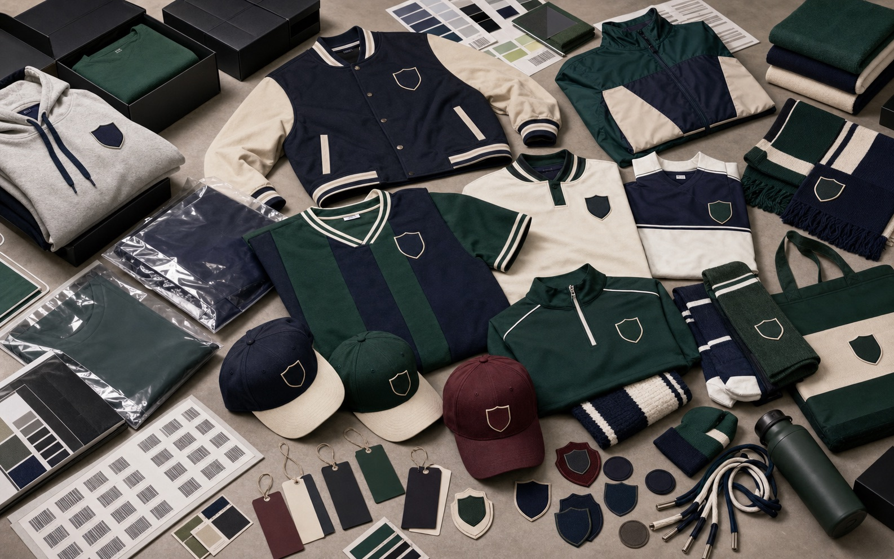

Fan Jerseys, Scarves, and Caps
- Fan jerseys, supporter scarves, caps, socks, patches, bags, towels, and club accessory bundles
- Embroidery, woven patches, heat transfer marks, stripe systems, labels, and barcode stickers
- Useful for club shops, academies, tournaments, events, distributors, and fan ecommerce stores